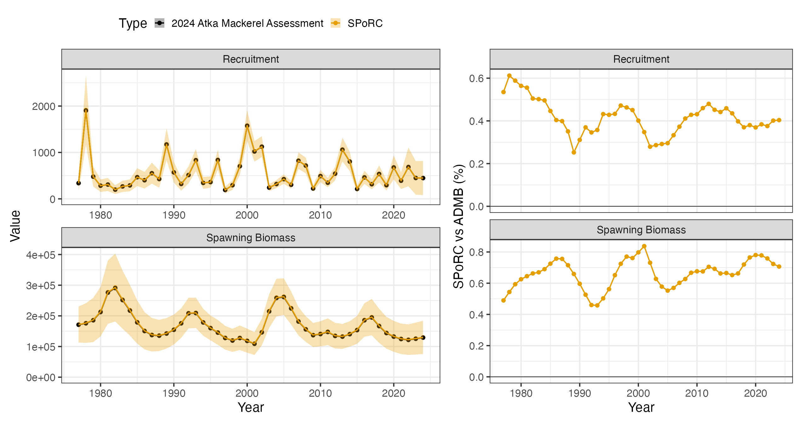
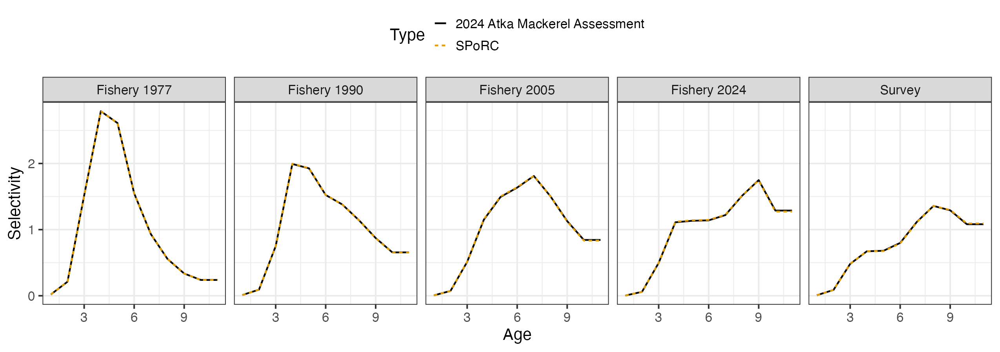

Case Study: Bering Sea and Aleutian Islands Atka Mackerel
ab_bsai_atka_mackerel_case_study.RmdOverview
This case study reproduces the 2024 Bering Sea and Aleutian Islands
Atka mackerel assessment, Model 16.0b, in SPoRC.
The model is single region, single sex, single season, with one fishery fleet and one survey:
| Source | Years | Observations | Likelihood |
|---|---|---|---|
| Catch | 1977–2024 | 48 | Lognormal, CV 0.05 |
| NMFS bottom trawl survey biomass | 1991–2024 | 14 | Lognormal |
| Fishery age compositions | 1977–2023 | 46 | Multinomial |
| Survey age compositions | 1991–2022 | 13 | Multinomial |
Ages run to , the plus group. Model years run to ; the assessment reports from .
AMAK initializes its age structure by starting from an equilibrium at
and running ten years forward with no fishing, adding a recruitment
deviation each year. Two recruitment scales appear and are not
interchangeable.
(log_Rzero) sets the equilibrium, and through it
and the stock recruit curve’s own scale, so it decides where the curve
sits and therefore what the penalty on the recruitment residual is
measured against.
(mean_log_rec) sets the level recruitment is generated
from. Here
against
,
and which of the two the curve takes is what sr_R0_spec
decides below.
Writing , the equilibrium is
and the ten years are
with
(rec_dev) estimated over
to
rather than over
to
.
AMAK penalizes
about zero, so
is median recruitment. Penalizing about
instead makes it mean recruitment, which is what SPoRC does
by default and is turned off under Recruitment below.
SPoRC gets there by carrying those ten years as model
years with
,
which makes
and the recursion above the ordinary dynamics. Its initial age structure
would be the alternative, but that puts one deviation on each age rather
than one on each year. Below the plus group the two agree, since each
age is one cohort; the plus group mixes the
recruitment with equilibrium carried forward, and responds to
only in proportion to the
percent of it that recruitment supplies.
The model therefore spans
to
while dat covers
to
,
so each year-indexed input is extended back to
before it goes in: biological arrays repeat
,
and catch, compositions and the index take zero or NA with
their use flags off.
library(SPoRC)
library(dplyr)
library(ggplot2)
data("sgl_rg_bsai_atka_data")
dat <- sgl_rg_bsai_atka_data
n_pre <- 10 # 1967 to 1976
yrs <- (min(dat$years) - n_pre):max(dat$years)
n_yrs <- length(yrs)
n_ages <- length(dat$ages)
n_obs <- length(dat$years)
i_amak <- which(yrs %in% dat$years) # the years the assessment reports
# The assessment's arrays run 1977 to 2024. Put ten years in front of whichever
# margin holds the years, so they run 1967 to 2024.
pad <- function(x, fill = NULL) {
m <- which(dim(x) == n_obs)
pre <- if(is.null(fill)) abind::asub(x, rep(1, n_pre), m, drop = FALSE)
else array(fill, dim = replace(dim(x), m, n_pre))
unname(abind::abind(pre, x, along = m))
}Model dimensions
Single region, single sex and single season, so the population, region, season and sex subscripts collapse to one and are dropped throughout.
input_list <- Setup_Mod_Dim(
years = yrs,
ages = dat$ages,
lens = NA,
n_regions = dat$n_regions,
n_sexes = dat$n_sexes,
n_fish_fleets = dat$n_fish_fleets,
n_srv_fleets = dat$n_srv_fleets,
n_seas = dat$n_seas,
n_pop = dat$n_pop,
natal_region = dat$natal_region,
verbose = FALSE
)Recruitment and the stock-recruit penalty
AMAK carries two recruitment parameters that are not interchangeable.
mean_log_rec sets the level of recruitment and generates
it, while log_Rzero sets the scale of the stock-recruit
curve and builds the unfished age structure. The curve never generates
recruitment; it appears in the objective only through the residual
.
That is rec_model = "mean_rec" with
sr_penalty = "bh". Recruitment is a mean with annual
deviations, and the Beverton-Holt curve is fitted as a penalty on the
residual rather than driving the dynamics.
inv_steepness <- function(s) qlogis((s - 0.2) / 0.8)
input_list <- Setup_Mod_Rec(
input_list = input_list,
rec_model = "mean_rec",
rec_lag = 1,
SR_ref_yr = 1,
sr_penalty = "bh",
sr_pen_sigma = dat$sigmaR / sqrt(1 + 1 / (2 * dat$nrecs_est)),
sr_pen_yrs = dat$styr_rec_est:dat$endyr_rec_est,
sr_R0_spec = "rinit",
steepness_h = array(inv_steepness(dat$steepness), dim = c(1, 1)),
h_spec = "fix",
do_rec_bias_ramp = 1,
bias_year = rep(n_yrs + 1, 4),
sigmaR_switch = 1,
sigmaR_spec = "fix",
ln_sigmaR = array(rep(log(dat$sigmaR), 2), dim = c(2, 1, 1)),
InitDevs_spec = "fix",
init_age_strc = 1,
equil_init_age_strc = 2,
ln_global_R0 = dat$mle$mean_log_rec,
ln_rinit = dat$mle$log_Rzero,
use_rinit = 1,
t_spawn = dat$t_spawn,
dont_est_recdev_last = 0,
Use_rec_level_pen = 0
)sr_R0_spec picks where the curve’s scale comes from.
"shared" uses ln_global_R0, the mean
recruitment level. "est" gives the curve its own parameter.
"rinit" uses ln_rinit, the recruitment the
initial age structure is built from.
AMAK’s log_Rzero does two jobs: it builds the initial
age structure and it sets the curve. "rinit" is the setting
that does the same. "shared" would put the curve on mean
recruitment, and "est" would add a parameter the assessment
does not have.
Starting in 1967 rather than 1977 is what removes the initial age
structure as a problem. At a 1977 start the first year has to absorb ten
years of propagated deviations, its plus group accumulates them rather
than carrying one, and matching the assessment’s numbers there costs its
penalty on them. Starting where AMAK starts makes those ten years
ordinary model years with ordinary recruitment deviations, so
InitDevs_spec = "fix" leaves the initial age structure as a
bare equilibrium. It also supplies the 1976 spawning biomass that AMAK’s
1977 stock-recruit residual needs, so sr_pen_yrs covers the
assessment’s window in full rather than dropping its first year.
Steepness is fixed at 0.8 and carried on a logit bounded to (0.2, 1),
so the fixed value goes in transformed. Passing h = 0.8 is
read as a starting value rather than as steepness, and leaves the
default of 0.6.
ln_sigmaR is the assessment’s
in both slots. It pairs with Wt_Rec, set under Weighting
below, and the two together are what reproduce AMAK’s recruitment
statements.
do_rec_bias_ramp = 1 with every break past the last year
is how the penalty is centred on zero. Setting
do_rec_bias_ramp = 0 does not do that: it sets the ramp to
one throughout, which centres on
.
dont_est_recdev_last stays at zero. AMAK estimates every
deviation and restricts only the years its stock-recruit likelihood
covers.
Biological dynamics
Weight and maturity at age are time invariant in the assessment but
are still extended back to
anyway, since SPoRC carries them by year. Natural mortality
is fixed at 0.3.
input_list <- Setup_Mod_Biologicals(
input_list = input_list,
WAA = pad(dat$WAA),
WAA_fish = pad(dat$WAA_fish),
WAA_srv = pad(dat$WAA_srv),
MatAA = pad(dat$MatAA),
AgeingError = dat$AgeingError,
fit_lengths = 0,
M_spec = "fix",
Fixed_natmort = pad(dat$Fixed_natmort),
addtocomp = 1e-3,
comp_const_obs = 1,
addtosrvidx = 0,
addtofishidx = 0
)Movement and tagging
Neither is used.
input_list <- Setup_Mod_Movement(input_list = input_list, use_fixed_movement = 1,
Fixed_Movement = NA, do_recruits_move = 0)
input_list <- Setup_Mod_Tagging(input_list = input_list, use_conv_fish_tagging = 0)Catch and fishing mortality
AMAK has no mean fishing mortality parameter. fmort is
the annual rate itself, estimated directly, so
ln_F_mean_spec = "fix" pins the mean at zero and the
deviations carry all of
.
input_list <- Setup_Mod_Catch_and_F(
input_list = input_list,
ObsCatch = pad(dat$ObsCatch, 0),
UseCatch = pad(dat$UseCatch, 0),
ln_F_mean_spec = "fix",
Use_F_pen = 0,
sigmaC_spec = "fix",
ln_sigmaC = array(log(dat$sigmaC), dim = c(1, n_yrs, 1, 1))
)ObsCatch = 0 with UseCatch = 0 over the
initialization years forces
to zero and drops the deviation from the parameter vector, which is what
leaves those years running on natural mortality alone. Using
NA would declare a missing observation and still estimate
an
there.
Use_F_pen = 0 because AMAK’s only fishing mortality
statement penalizes the realized
at age surface toward 0.2, which SPoRC has no counterpart
for. Every SPoRC fishing mortality penalty is a normal
density on log deviations and none of them receives selectivity.
Fishery compositions
There is no fishery index, so the index arrays are supplied unused.
input_list <- Setup_Mod_FishIdx_and_Comps(
input_list = input_list,
ObsFishIdx = array(NA_real_, dim = c(1, n_yrs, 1, 1)),
ObsFishIdx_SE = array(NA_real_, dim = c(1, n_yrs, 1, 1)),
UseFishIdx = array(0, dim = c(1, n_yrs, 1, 1)),
ObsFishAgeComps = pad(dat$ObsFishAgeComps, 0),
UseFishAgeComps = pad(dat$UseFishAgeComps, 0),
ISS_FishAgeComps = pad(dat$ISS_FishAgeComps, 0),
ObsFishLenComps = array(NA_real_, dim = c(1, n_yrs, 1, length(input_list$data$lens), 1, 1)),
UseFishLenComps = array(0, dim = c(1, n_yrs, 1, 1)),
ISS_FishLenComps = array(0, dim = c(1, n_yrs, 1, 1, 1)),
fish_idx_type = c("biom"),
FishIdx_LikeType = c("lognormal"),
FishAgeComps_LikeType = c("Multinomial"),
FishLenComps_LikeType = c("none"),
FishAgeComps_Type = c("agg_Year_1-terminal_Fleet_1"),
FishLenComps_Type = c("none_Year_1-terminal_Fleet_1")
)FishIdx_LikeType has no "none" level, so it
takes a placeholder value and UseFishIdx = 0 keeps the term
out of the objective.
comp_const_obs = 1, set with the biologicals above, puts
the composition constant on the observed side as well as the expected
side, which is AMAK’s multinomial. addtocomp is that
constant.
Survey index and compositions
input_list <- Setup_Mod_SrvIdx_and_Comps(
input_list = input_list,
ObsSrvIdx = pad(dat$ObsSrvIdx, NA_real_),
ObsSrvIdx_SE = pad(dat$ObsSrvIdx_SE, NA_real_),
UseSrvIdx = pad(dat$UseSrvIdx, 0),
ObsSrvAgeComps = pad(dat$ObsSrvAgeComps, 0),
UseSrvAgeComps = pad(dat$UseSrvAgeComps, 0),
ISS_SrvAgeComps = pad(dat$ISS_SrvAgeComps, 0),
ObsSrvLenComps = array(NA_real_, dim = c(1, n_yrs, 1, length(input_list$data$lens), 1, 1)),
UseSrvLenComps = array(0, dim = c(1, n_yrs, 1, 1)),
ISS_SrvLenComps = array(0, dim = c(1, n_yrs, 1, 1, 1)),
srv_idx_type = c("biom"),
SrvIdx_LikeType = c("lognormal"),
SrvAgeComps_LikeType = c("Multinomial"),
SrvLenComps_LikeType = c("none"),
SrvAgeComps_Type = c("agg_Year_1-terminal_Fleet_1"),
SrvLenComps_Type = c("none_Year_1-terminal_Fleet_1"),
t_srv = array(dat$t_srv, dim = c(1, 1, 1))
)The survey is a biomass index read at .
Fishery selectivity and catchability
Selectivity is non-parametric on the log scale, exponentiated and standardized so each year averages one. The oldest estimated coefficient is held flat to the plus group before the standardization, which is a bin grouping rather than a separate parameter.
The assessment lists 46 change years and the template prepends the first model year, so there are 47 blocks and the terminal year shares the one before it. The closed years ride on the first block, which never reaches the dynamics because is zero there.
bin_groups <- function(nsel) c(as.list(seq_len(nsel - 1)), list(nsel:n_ages))
blk <- c(paste0("Block_1_Year_1-", n_pre + 1, "_Fleet_1"),
paste0("Block_", 2:(dat$n_blk_fsh - 1), "_Year_", (n_pre + 2):(n_yrs - 2), "-",
(n_pre + 2):(n_yrs - 2), "_Fleet_1"),
paste0("Block_", dat$n_blk_fsh, "_Year_", n_yrs - 1, "-terminal_Fleet_1"))
input_list <- Setup_Mod_Fishsel_and_Q(
input_list = input_list,
cont_tv_fish_sel = c("none_Fleet_1"),
fish_sel_blocks = blk,
fish_sel_model = c("nonparlog_Fleet_1"),
fish_sel_nonpar_est_bins = list(rep(list(bin_groups(dat$nselages_fsh)), dat$n_blk_fsh)),
fish_fixed_sel_pars_spec = c("est_all"),
fish_q_blocks = c("none_Fleet_1"),
fish_q_spec = c("fix"),
use_fixed_fish_sel = 0,
Use_fish_selex_penalty = 1,
fish_selex_penalty = dat$fish_selex_penalty
)The fishery standardizes over every age, which is the default window.
Survey selectivity and catchability
The survey standardizes over ages 4 to 10, the ages catchability is defined against, rather than over every age.
input_list <- Setup_Mod_Srvsel_and_Q(
input_list = input_list,
cont_tv_srv_sel = c("none_Fleet_1"),
srv_sel_blocks = c("none_Fleet_1"),
srv_sel_model = c("nonparlog_Fleet_1"),
srv_sel_nonpar_est_bins = list(list(bin_groups(dat$nselages_srv))),
srv_sel_norm_bins = list(dat$q_age_min:dat$q_age_max),
srv_fixed_sel_pars_spec = c("est_all"),
srv_q_blocks = c("none_Fleet_1"),
srv_q_spec = c("est_all"),
srv_q_type = c("est"),
use_fixed_srv_sel = 0,
Use_srv_selex_penalty = 1,
srv_selex_penalty = dat$srv_selex_penalty,
Use_srv_q_prior = 1,
srv_q_prior = dat$srv_q_prior,
t_srv = array(dat$t_srv, dim = c(1, 1, 1))
)Weighting
The selectivity shape weights are set here rather than in the selectivity setup, where they are read as starting values and every smoothness penalty evaluates to zero.
Three terms act on the realized selectivity surface, so they apply whatever functional form produced it. Over bins and years , with :
fish_sel_pen_wts and srv_sel_pen_wts take
one named list per fleet, or a single named list applied to every fleet.
The six term names are smooth_bin_curve,
smooth_bin_diff, smooth_yr_diff,
smooth_yr_curve, smooth_dome and
smooth_mean_center, and anything left out is zero, which is
how a fleet names only the terms it constrains. Each is either a scalar
used in every year or a vector with one value per model year. Three
settings sit alongside them: bin_range, a length two vector
giving the first and last bin the terms run over, every bin by default;
normalize, which divides a term by the number of bins or
years in its sum so the weight reads as a mean rather than a total,
TRUE by default; and yr_diff_ref, a value to
hold the walk’s first penalized year against.
Here bin_range is ages 4 to 10 and
normalize is FALSE, since AMAK sums rather
than averages. Left at the default, the curvature weight would be
divided by the seven bins and the year difference by the 58 years. The
dome term is not normalized either way.
Here every active term is a per-year vector, which is what lets a term act only in the years a block changes. The years before carry none, since the first block would otherwise be penalized on its curvature and dome eleven times over. The year difference is zeroed at to match AMAK, whose walk starts there with nothing before it; the term would come out zero anyway, since and share the first block and so share coefficients.
fw <- dat$fish_sel_pen_wts
for(nm in c("smooth_bin_curve", "smooth_yr_diff", "smooth_dome")) {
fw[[1]][[nm]] <- c(rep(0, n_pre), dat$fish_sel_pen_wts[[1]][[nm]])
} # end nm loop
fw[[1]]$smooth_yr_diff[n_pre + 1] <- 0
sw <- dat$srv_sel_pen_wts
for(nm in c("smooth_bin_curve", "smooth_yr_diff", "smooth_dome")) {
if(length(sw[[1]][[nm]]) == n_obs) sw[[1]][[nm]] <- c(rep(0, n_pre), dat$srv_sel_pen_wts[[1]][[nm]])
} # end nm loopSPoRC penalizes a recruitment deviation by
,
where
is that year’s Wt_Rec and
is ln_sigmaR exponentiated. AMAK penalizes
on every year, a raw sum of squares carrying no
,
then adds
more over the first and last part of the time series. With
,
is whatever cancels the
:
The cancels in the second, so the added component is worth exactly one whatever is.
tail_yrs <- c(dat$styr_rec:dat$styr_rec_est, dat$endyr_rec_est:max(yrs))
Wt_Rec <- array(2 * dat$sigmaR^2, dim = c(1, 1, n_yrs))
Wt_Rec[1, 1, which(yrs %in% tail_yrs)] <- 2 * dat$sigmaR^2 + 1
input_list <- Setup_Mod_Weighting(
input_list = input_list,
Wt_Catch = 1, Wt_FishIdx = 1, Wt_SrvIdx = 1,
Wt_Rec = Wt_Rec, Wt_Init_Rec = 1, Wt_F = 1, Wt_Tagging = 0,
Wt_FishAgeComps = array(1, dim = c(1, n_yrs, 1, 1, 1)),
Wt_FishLenComps = array(1, dim = c(1, n_yrs, 1, 1, 1)),
Wt_SrvAgeComps = array(1, dim = c(1, n_yrs, 1, 1, 1)),
Wt_SrvLenComps = array(1, dim = c(1, n_yrs, 1, 1, 1)),
fish_sel_pen_wts = fw,
srv_sel_pen_wts = sw
)
data <- input_list$data
parameters <- input_list$par
mapping <- input_list$mapStarting at the AMAK estimate
Every parameter is set to the assessment’s maximum likelihood estimate, and the objective is evaluated there before anything is optimized.
parameters$ln_F_devs[1, n_pre + seq_len(n_obs), 1, 1] <- log(dat$mle$fmort)
for(b in seq_len(dat$n_blk_fsh)) {
parameters$fish_fixed_sel_pars[1, , b, 1, 1] <-
c(dat$mle$log_selcoffs_fsh[b, ], dat$mle$log_selcoffs_fsh[b, dat$nselages_fsh])
} # end b loop
parameters$srv_fixed_sel_pars[1, , 1, 1, 1] <-
c(dat$mle$log_selcoffs_ind, dat$mle$log_selcoffs_ind[dat$nselages_srv])
parameters$ln_RecDevs[1, 1, ] <- dat$amak$rec_dev[as.character(yrs)]
# Catchability absorbs the selectivity standardization, so it is added to the
# current value rather than set to the assessment's.
pass1 <- fit_model(data, parameters, mapping, do_optim = FALSE, silent = TRUE)
parameters$ln_srv_q[1, 1, 1] <- parameters$ln_srv_q[1, 1, 1] +
log(mean(dat$amak$pred_ind / pass1$rep$PredSrvIdx[1, 1, i_srv, 1, 1]))
seed <- fit_model(data, parameters, mapping, do_optim = FALSE, silent = TRUE)The following provides a comparison of the difference prior to optimization:
numbers at age 9.5e-14 %
fishing mortality at age 7.1e-14 %
catch at age 1.3e-13 %
spawning biomass 5.6e-14 %
recruitment 5.8e-14 %
predicted catch 4.1e-14 %
predicted survey index 3.8e-14 %
fishery selectivity 4.7e-14 %
survey selectivity 4.8e-14 %
recruitment deviations 0SPoRC writes each likelihood component as a proper
density while AMAK drops normalising constants, so the comparison
subtracts exactly the constants AMAK omits:
| Component |
SPoRC less constants |
AMAK | Difference |
|---|---|---|---|
| Catch | 0.0618957043 | 0.0618957040 | |
| Fishery age compositions | 147.5587066215 | 147.5587066215 | |
| Survey index | 12.4723703086 | 12.4723703086 | |
| Survey age compositions | 30.9399388260 | 29.6027421985 | |
| Selectivity penalties | 111.2203965047 | 111.2203965047 | |
| Catchability prior | 3.9508772733 | 3.9508772733 |
Fitting and comparison
est <- fit_model(data, parameters, mapping, do_optim = TRUE, newton_loops = 3, silent = TRUE)
est$sdrep <- RTMB::sdreport(est, hessian.fixed = est$he())589 parameters, which matches the AMAK assessment’s own parameter count. The objective falls from 265.046 at the assessment’s estimate to 265.034.
| Median | Maximum | |
|---|---|---|
| Spawning biomass | 0.67 % | 0.84 % |
| Recruitment | 0.41 % | 0.61 % |


Why the two differ
Everything in the population dynamics and the observation model agrees to percent, and five of the six likelihood components agree to . What is left is a quirk with the compositions.
AMAK renormalizes its fishery expected compositions after applying
ageing error and does not renormalize its survey ones. Its ageing error
rows sum to between 0.972 and 1.013, so its survey expectation is not a
probability vector. That is the
in the table above, and it is an inconsistency between AMAK’s two fleets
rather than a modelling choice, so SPoRC does not reproduce
it.